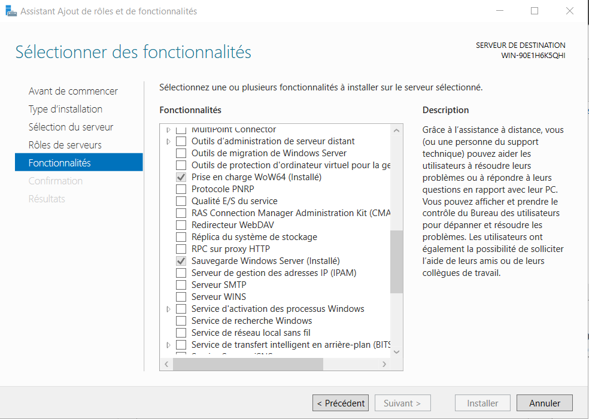
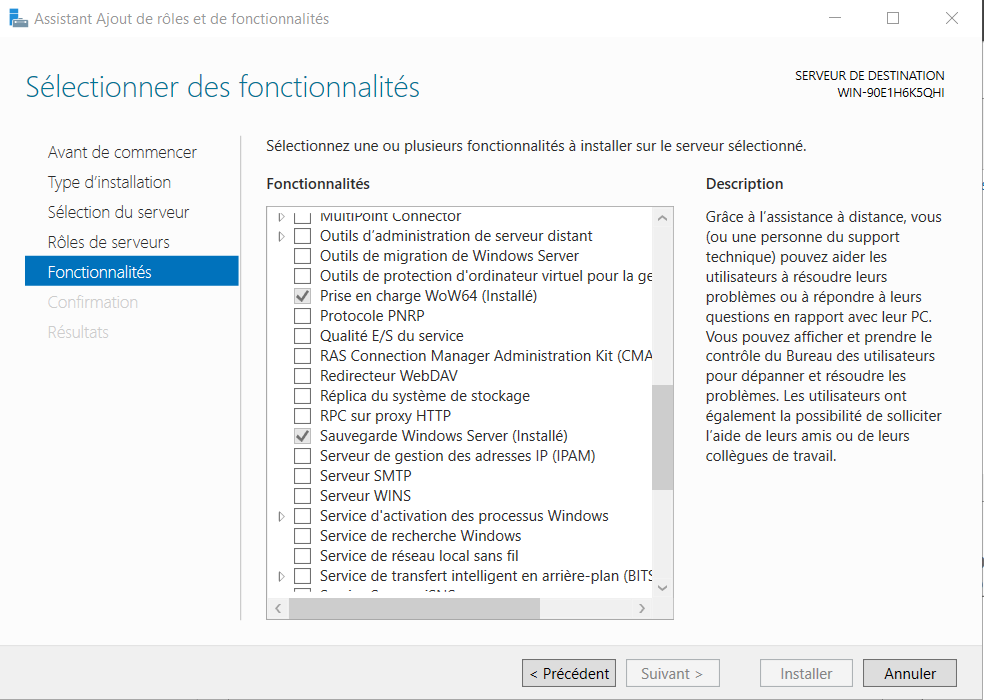

Installation
Dans le serveur, on va dans ajouter des rôles et des fonctionnalités, et on ajoute la fonctionnalité Sauvegarde Windows Server.

On peut ensuite aller dans Outils puis Sauvegarde Windows Server.

Dans le serveur, on va dans ajouter des rôles et des fonctionnalités, et on ajoute la fonctionnalité Sauvegarde Windows Server.

On peut ensuite aller dans Outils puis Sauvegarde Windows Server.